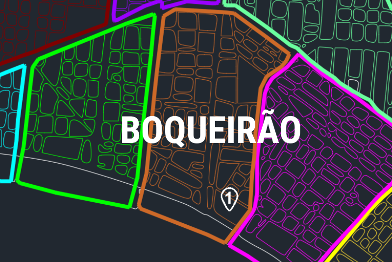
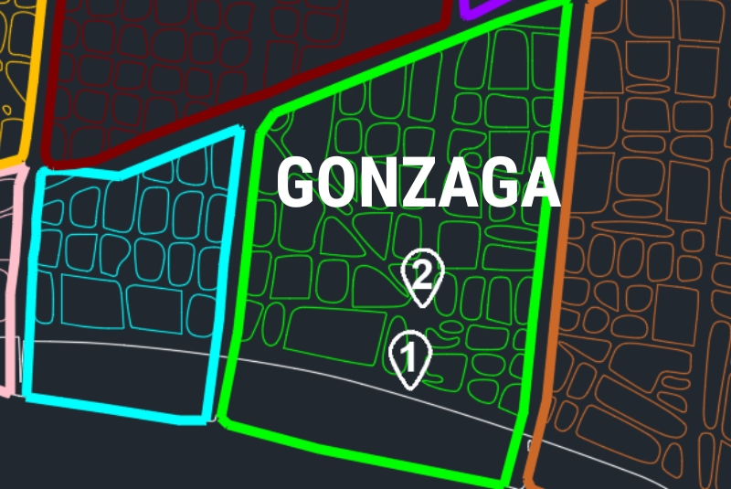
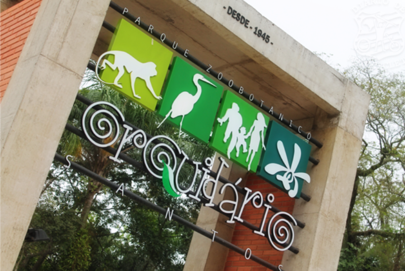
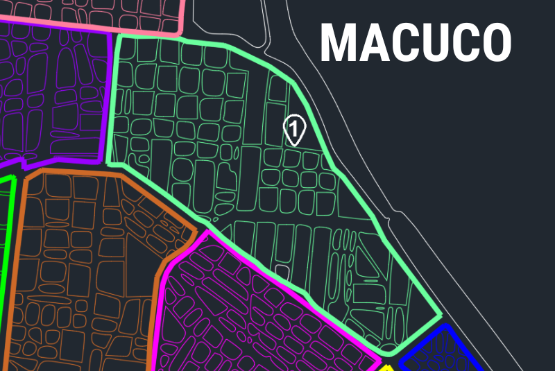
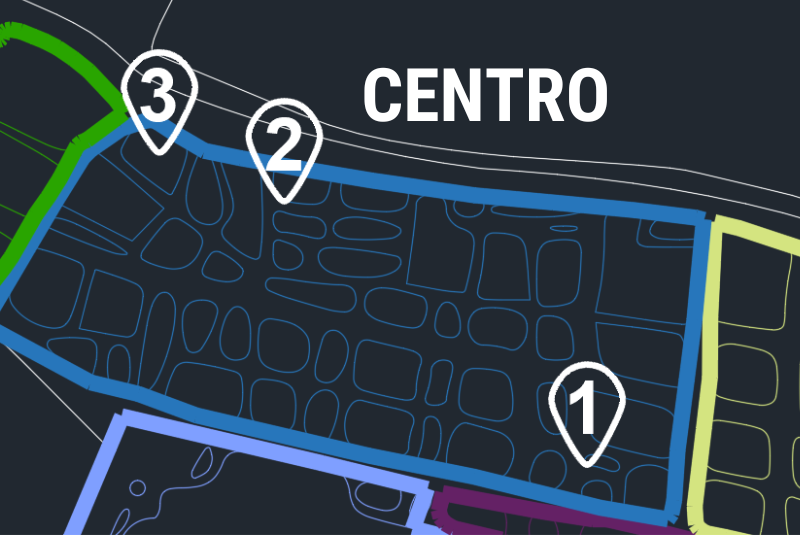
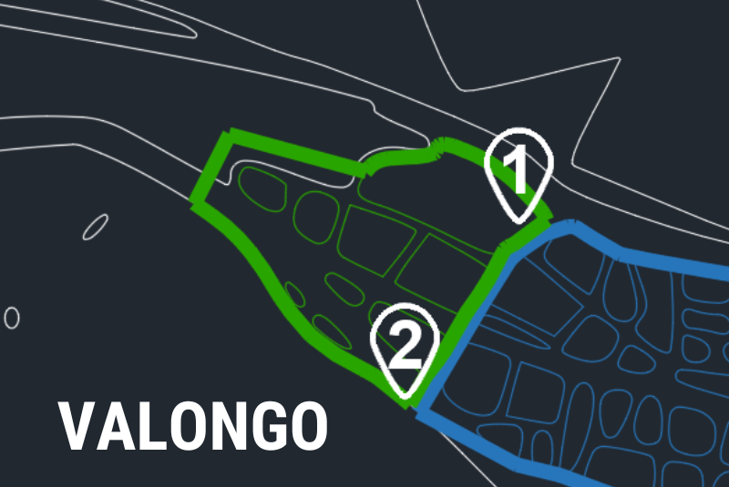
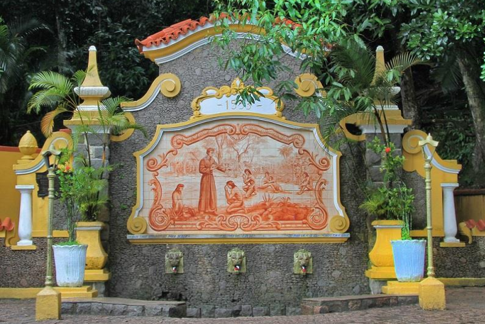

Ponta da Praia
1. Aquário Municipal de Santos
2. Museu de Pesca
3. Deck do Pescador
4. Passeio de Escuna - Escuna Mestre dos Mares, Ponte Edgard Perdigão
5. Balsa para o Guarujá
6. Blue Med Convention Center (Centro de convenção de Santos)
7. Mercado de Peixe
8. Museu do Mar

1. Aquário Municipal de Santos
Endereço: Praça Luiz La Scala, s/nº - Ponta da Praia, Santos - SP, 11030-600
Horário de Funcionamento: Terça a Domingo, das 9h às 18h. Bilheteria fecha às 17h30. Site oficial
Descrição: O Aquário Municipal, oferece uma experiência educativa e recreativa, destacando a biodiversidade marinha local. Com exposições de espécies marinhas, o aquário promove a conscientização ambiental e pode oferecer programas educativos para envolver o público na preservação dos ecossistemas aquáticos.

2. Museu de Pesca
Endereço: Avenida Bartolomeu de Gusmão, 192 - Ponta da Praia, Santos - SP, 11030-906
Horário de Funcionamento: Fechado temporariamente para reforma. Site oficial
Descrição: O Museu de Pesca, com mais de meio século de encantamento, exibe uma coleção diversificada de espécies marinhas taxidermizadas, conchas, corais, maquetes de embarcações e equipamentos de pesca. Além de oferecer cursos, palestras e visitas monitoradas, o museu promove a conscientização sobre a preservação dos ecossistemas aquáticos e a pesca sustentável.

3. Deck do Pescador
Endereço: Av. Alm. Saldanha da Gama, s/n - Ponta da Praia, Santos - SP, 11030-401
Horário de Funcionamento: Sexta a domingo, das 7h às 18h. Segunda a Quinta, das 7h às 22h. Site oficial
Descrição: O deck do pescador, além de oferecer uma vista deslumbrante da orla e ser um ponto turístico popular, conta com infraestrutura que inclui banheiros e quiosque. Ideal para pesca recreativa, passeios e contemplação, é uma atração emblemática que atende às necessidades dos visitantes e pescadores locais.

4. Passeio de Escuna
Endereço: Em frente ao Clube Saldanha Gama - Ponte Edgard Perdigão, Av. Alm. Saldanha da Gama, s/n - Ponta da Praia, Santos - SP, 11030-400
Programação: Consutar no Site oficial
Descrição: O Passeio com a Escuna Mestre dos Mares oferece uma experiência marítima inesquecível. Navegando pelas águas serenas, os passageiros desfrutam de vistas deslumbrantes, brisa marinha e atividades a bordo. Com tripulação experiente, a escuna proporciona um ambiente descontraído, perfeito para relaxar e apreciar as belezas costeiras.

5. Balsa para o Guarujá
Endereço: Praça Almirante Gago Coutinho, 525 - Ponta da Praia, Santos - SP, 11030-200
Horário de Funcionamento: Consutar no Site oficial
Descrição: Todas as embarcações cumprem um cronograma de manutenção preventiva e se encontram em perfeitas condições de funcionamento, aprovadas e certificadas para operarem. As balsas são gratuitas para ciclistas. Idosos e pessoas com deficiência têm embarque prioritário.

6. Centro de convenção
Endereço: Pr. Almirante Gago Coutinho, 29 - Ponta da Praia, Santos - SP, 11030-200
Programação: Consutar no Site oficial
Descrição: O Centro de Convenções de Santos destaca-se como um espaço moderno e versátil para eventos. Com instalações de ponta e design arrojado, o local proporciona o ambiente ideal para conferências, exposições e reuniões. Sua localização privilegiada na cidade costeira complementa a experiência, oferecendo aos participantes uma atmosfera inspiradora à beira-mar.

7. Mercado de Peixe
Endereço: Av. Gov. Mário Covas Júnior, 3050 - Ponta da Praia, Santos - SP, 11030-200
Horário de Funcionamento: Terça a Sábado, das 7h às 18h. Domingo, das 7h ás 15h. Site oficial
Descrição: O Mercado do Peixe na Ponta da Praia oferece uma incrível variedade de peixes frescos. No segundo andar, um restaurante encanta os visitantes com a frescura dos frutos do mar e pratos regionais irresistíveis. Os clientes vivenciam uma experiência culinária singular, imersos na autêntica essência da cozinha local, enquanto desfrutam de uma vista encantadora do Mercado.

8. Museu do Mar
Endereço: R. República do Equador, 81 - Ponta da Praia, Santos - SP, 11030-151
Horário de Funcionamento: Segunda a Domingo, das 13h30 às 18h. Site oficial
Descrição: O Museu do Mar em Santos é um mergulho na rica história marítima da cidade. Exibindo naufrágios, instrumentos de navegação e relíquias marítimas, o museu cativa os visitantes com sua coleção fascinante. Uma jornada educativa que revela as conexões profundas entre Santos e o oceano, enriquecendo a compreensão local.
Explore

Boqueirão
1. Pinacoteca Benedito Calixto: "O Histórico Casarão Branco", tombada pelo Conselho Municipal

1. Pinacoteca Benedito Calixto
Endereço: Av. Bartholomeu de Gusmão, 15 - Boqueirão, Santos - SP, 11045-400
Horário de Funcionamento: Terça a Domingo, das 9h30 às 18h. Site oficial
Descrição: A Pinacoteca Benedito Calixto é uma instituição cultural que abriga uma rica coleção de obras de arte, especialmente pinturas do renomado artista brasileiro Benedito Calixto. Localizada em um edifício histórico, a pinacoteca oferece aos visitantes uma experiência enriquecedora, destacando a contribuição significativa da arte para a identidade cultural local.
Explore

Gonzaga
1. Praça das Bandeiras: Homenagem aos feitos de Santos durante a Revolução Constitucionalista de 1932
2. Praça da Independência: Inaugurada em 7 de setembro de 1922

1. Praça das Bandeiras
Endereço: Av. Vicente de Carvalho, S/N - Gonzaga, Santos - SP, 11045-501
Descrição: A Praça das Bandeiras, localizada no charmoso bairro Gonzaga, é um ponto de encontro vibrante. Rodeada por comércios e restaurantes, a praça oferece um ambiente acolhedor para moradores e visitantes. Seu paisagismo encantador, bancos convidativos e a presença das bandeiras estaduais criam uma atmosfera única de convívio.

2. Praça da Independência
Endereço: Av. Ana Costa - Gonzaga, Santos - SP, 11060-010
Descrição: A Praça da Independência, no coração do bairro Gonzaga, é um refúgio tranquilo. Rodeada por árvores e bancos, oferece um espaço convidativo para descanso e contemplação. Com sua atmosfera serena, a praça é um oásis urbano apreciado por moradores e visitantes em busca de paz.
Explore

José Menino
1. Quebra-Mar: Parque Roberto Mário Santini e escultura de Tomie Ohtake
2. Orquidário Municipal de Santos: Inaugurado em 1945

1. Quebra Mar
Endereço: Av. Pres. Wilson, S/N - José Menino, Santos - SP, 11065-201
Descrição: O Quebra-Mar, em José Menino, é uma paisagem paradisíaca que harmoniza o oceano com a terra. O Parque Roberto Mário Santini oferece vistas deslumbrantes do mar, proporcionando um refúgio relaxante com ciclovias e áreas verdes, tornando-se um destino encantador para lazer e contemplação à beira-mar.

2. Orquidário Municipal de Santos
Endereço: Praça Washington, s/n - José Menino, Santos - SP, 11065-600
Horário de Funcionamento: Terça a Domingo, das 9h às 18h. Bilheteria fecha às 17h30. Site oficial
Descrição: O Orquidário Municipal de Santos, situado no bairro José Menino, é um tesouro botânico. Com uma coleção deslumbrante de orquídeas e outras espécies exóticas, o jardim oferece um refúgio sereno para amantes da natureza. Seus viveiros coloridos e trilhas encantadoras convidam à contemplação, tornando-o um destino único na cidade.
Explore

Macuco
1. Museu do Porto de Santos: Inaugurado em 1º de setembro de 1989, que narra a rica história marítima da região

1. Museu do Porto de Santos
Endereço: Av. Conselheiro Rodrigues Alves - Macuco, Santos - SP, 11015-230
Horário de Funcionamento: Segunda a Sábado, das 9h às 17h. Visita guiada a cada 30 minutos. Site oficial
Descrição: O Museu do Porto de Santos destaca a rica história marítima da cidade. Localizado em um antigo armazém portuário, exibe artefatos, fotografias e modelos de navios, proporcionando uma viagem no tempo pela evolução do porto. Uma experiência imersiva que revela o papel vital desempenhado pelo porto na construção da identidade de Santos.
Explore

Vila Belmiro
1. Cemitério Memorial Necrópole Ecumênica: Mausoléu do Rei Pelé
2. Estádio do Santos - Vila Belmiro: O templo sagrado do futebol mundial

1. Cemitério Memorial Necrópole Ecumênica
Endereço: Av. Dr. Nilo Peçanha, 50 - Marapé, Santos - SP, 11070-908
Horário de Funcionamento: Segunda a Domingo, das 8h às 19h. Site oficial
Descrição: A Necrópole Ecumênica, na Vila Belmiro, é o eterno lar de Pelé, o Rei do Futebol. Este cemitério singular reverencia a grandiosidade do ícone esportivo. Um espaço sagrado onde admiradores se reúnem para honrar o legado imortal do maior jogador da história, marcando sua contribuição indelével ao futebol mundial.

2. Estádio do Santos - Vila Belmiro
Endereço: Rua Princesa Isabel, S/N, Vila Belmiro, Santos - SP, 11075-501
Horário de Funcionamento: Segunda a Sexta, das 9h às 17h. Site oficial
Descrição: A Vila Belmiro, templo sagrado do futebol mundial, é o icônico estádio do Santos FC. Com mais de um século de história, suas arquibancadas ecoam os feitos lendários do clube. Palco de conquistas inesquecíveis, a Vila personifica a paixão e glória que permeiam a trajetória vitoriosa do Peixe.
Explore

Monte Serrat
1. Bonde do Monte Serrat: Santuário de Nossa Senhora do Monte Serrat e o antigo Cassino

1. Bonde do Monte Serrat
Endereço: Praça Correia de Mello nº 33, Centro Histórico
Horário de Funcionamento: Segunda a Domingo, das 8h às 20h. Site oficial
Descrição: O Monte Serrat em Santos, majestosa elevação, oferece vistas panorâmicas deslumbrantes da cidade e do mar. O acesso por um centenário funicular aumenta a experiência. Seu histórico mirante proporciona uma atmosfera única para contemplar o cenário encantador, tornando-se um ponto imperdível para residentes e visitantes explorarem a beleza da região.
Explore

Centro
1. Praça Patriarca José Bonifácio
2. Museu do Café: Cafeteria e Centro de Preparação de Café com curso de Barista
3. Museu Pelé: Instalado nos antigos Casarões do bairro Valongo

1. Praça Patriarca José Bonifácio
Endereço: Praça Patriarca José Bonifácio, S/N - Centro, Santos - SP, 11013-190
Descrição: A Praça Patriarca José Bonifácio, é um charmoso espaço urbano que homenageia um dos patriarcas da independência do Brasil. Rodeada por árvores e bancos, a praça convida moradores e visitantes a desfrutarem de momentos de lazer e contemplação, destacando-se como ponto emblemático na cidade litorânea.

2. Museu do Café
Endereço: R. Quinze de Novembro, 95 - Centro, Santos - SP, 11010-150
Horário de Funcionamento: Terça a Sábado, das 9h às 17h. Domingo, das 10h ás 17h. Site oficial
Descrição: O Museu do Café em Santos é um tesouro cultural que narra a história fascinante do café no Brasil. Instalado em um antigo edifício portuário, o museu oferece exposições interativas e detalhes sobre o ciclo cafeeiro, proporcionando uma imersão única na rica herança cultural e econômica dessa preciosa bebida.

3. Museu Pelé
Endereço: Largo Marquês de Monte Alegre, 1 - Valongo, Santos - SP, 11010-260
Horário de Funcionamento: Terça a Sábado, das 10h às 17h30. Site oficial
Descrição: O Museu Pelé em Santos, instalado nos antigos Casarões do Valongo, é um tributo ao Rei do Futebol, Edson Arantes do Nascimento. Destacando a rica trajetória de Pelé, o museu exibe troféus, fotos e objetos pessoais, oferecendo uma imersão única na história e legado do futebol brasileiro.
Explore

Valongo
1. Linha Turística do Bonde: Bondes originais procedentes da Escócia, Portugal, Itália e Japão
2. Museu de Arte Sacra: Localizado no complexo beneditino, com a Igreja de Nossa Senhora do Desterro e o antigo Mosteiro de São Bento.

1. Linha Turística do Bonde
Endereço: Largo Marquês de Monte Alegre, 2 - Valongo, Santos - SP, 11010-060
Horário de Funcionamento: Terça a Sexta, das 11h às 17h. Sábado, das 10h30 ás 17h. Site oficial
Descrição: A Linha Turística do Bonde oferece uma viagem encantadora pela história da cidade. Percorrendo charmosas ruas do centro, o bonde resgata a atmosfera nostálgica dos anos dourados. Com guias entusiasmados, os passageiros exploram a arquitetura preservada e aprendem sobre o passado portuário e cultural de Santos. Uma experiência única.

2. Museu de Arte Sacra
Endereço: Rua Santa Joana D’Arc, 795 (sopé do Morro São Bento), acesso ao estacionamento pela Rua Visconde do Embaré, Santos - SP
Horário de Funcionamento: Terça a Sábado, das 10h às 16:30h. Domingo, das 13h ás 16h30. Site oficial
Descrição: O Museu de Arte Sacra preserva a rica herança religiosa da região, exibindo uma coleção diversificada de obras sacras. Localizado em um edifício histórico, o museu oferece aos visitantes uma jornada única através de esculturas, pinturas e objetos litúrgicos, proporcionando uma conexão fascinante com a história cultural local.
Explore

São Vicente
1. Teleférico de São Vicente: Altitude no topo, ao nível do mar, é de 170 metros
2. Morro da Asa Delta (Morro de Itararé): Ponto máximo a 180 metros de altura
3. Memorial dos 500 Anos (Mirante Niemeyer)
4. Ilha Porchat
5. Jardim Botânico: Espaço verde com 90 mil m²
6. Biquinha: Construída em 1553
7. Ponte Pênsil: Construída em 1914

1. Teleférico de São Vicente
Endereço: Av. Ayrton Senna da Silva, 500 - Itararé, São Vicente - SP, 11321-000
Horário de Funcionamento: Segunda a Sexta, das 10h às 16h. Finais de Semana e Feriados, das 10h às 16h. Site oficial
Descrição: O Teleférico de São Vicente oferece uma vista deslumbrante da cidade e do mar, proporcionando uma experiência única aos visitantes. Com uma altitude de 170 metros, a jornada panorâmica oferece momentos memoráveis, destacando a beleza costeira de São Vicente e suas paisagens envolventes.

2. Morro da Asa Delta (Morro de Itararé)
Endereço: Morro Voturuá - Itararé, São Vicente - SP
Horário de Funcionamento: Segunda a Sexta, das 10h às 16h. Finais de Semana e Feriados, das 10h às 16h. Site oficial
Descrição: O Morro da Asa Delta, em Itararé, oferece aos aventureiros uma emocionante experiência a 180 metros de altura. Conhecido por suas condições ideais para voos livres, o local também abriga um restaurante, permitindo que os visitantes desfrutem não apenas da adrenalina dos esportes radicais, mas também de deliciosas refeições com vistas deslumbrantes.

3. Memorial dos 500 Anos (Mirante Niemeyer)
Endereço: Alameda Ari Barroso - Ilha Porchat, São Vicente - SP, 11320-400
Horário de Funcionamento: Aberto todos os dias, 24 horas por dia. Site oficial
Descrição: O Memorial dos 500 Anos, Mirante Niemeyer, em São Vicente, celebra a rica história da cidade. Com vistas panorâmicas espetaculares, oferece uma jornada visual através dos séculos. Este ponto turístico marcante homenageia os 500 anos do Brasil , proporcionando uma experiência cultural única, enraizada na beleza da baía e da região.

4. Ilha Porchat
Endereço: Ilha Porchat, São Vicente - SP Site oficial
Descrição: Ilha Porchat, em São Vicente, é um refúgio costeiro encantador. Com paisagens deslumbrantes e trilhas pitorescas, cativa visitantes em busca de serenidade. Seus mirantes oferecem vistas magníficas do oceano. O restaurante Terraço, no local, complementa a experiência, proporcionando deliciosas refeições com uma vista espetacular para o mar.

5. Jardim Botânico
Endereço: R. João Fraccaroli, s/n - Bom Retiro, Santos - SP, 11089-230
Horário de Funcionamento: Segunda a sexta, das 07h às 19h. Sábados e domingos, das 07h às 18h. Site oficial
Descrição: O Jardim Botânico é um oásis verdejante que cativa com sua diversidade botânica. Visitantes exploram trilhas sombreadas, descobrindo uma vasta coleção de plantas exóticas e locais. O ambiente tranquilo e educativo torna este espaço um refúgio urbano, ideal para apreciar a natureza e promover a conscientização ambiental.

6. Biquinha
Endereço: Praça 22 de Janeiro - Centro, São Vicente - SP, 11310-090
Horário de Funcionamento: Aberto todos os dias, 24 horas por dia. Site oficial
Descrição: A Biquinha, em São Vicente, é uma fonte histórica e cenário pitoresco, construída em 1553 e tombada pelo Conselho Municipal. Rodeada por jardins bem cuidados, este local é famoso pela "Feira dos Doces". Com águas cristalinas, a Biquinha é um marco que reflete a rica herança da cidade, convidando à contemplação serena.

7. Ponte Pênsil
Endereço: Pte. Pênsil, 257 - Japuí, São Vicente - SP, 11325-010 Site oficial
Descrição: A Ponte Pênsil em São Vicente, construída em 1914, é um marco histórico que se estende por 325 metros, ligando a ilha à Praia Grande. Além de sua importância arquitetônica, a ponte oferece vistas deslumbrantes da Baía de Santos, proporcionando uma experiência única aos visitantes que a atravessam.